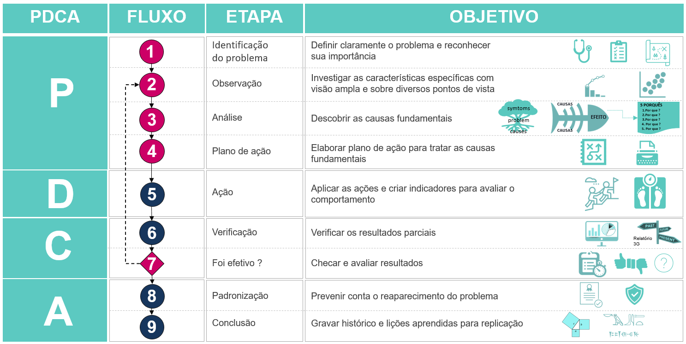

1 Conceitos
1.1 Método PDCA
O PDCA é um método criado para auxiliar os gestores na identificação e solução de problemas. Ele mostra de forma simplificada e organizada o caminho a ser percorrido na busca de melhoria contínua.
Também conhecido como ciclo de Shewhart ou ciclo de Deming, foi concluído em 1930 por Walter Shewhart no Bell Laboratories que analisando estatisticamente o controle de processos, criou um modelo que poderia ser aplicado em qualquer situação (WERKEMA, 1995).
O estatístico William Edwards Deming foi o responsável por propagar a idéia no Japão após a segunda guerra mundial. Desde então, obteve-se a popularização ao redor do mundo, das técnicas e da qualidade dos produtos japoneses(veículos, eletronicos, frutas etc), os quais antes da guerra competiam no mercado internacional apenas em preço e não em qualidade.
Segundo Campos (1995), o ciclo PDCA tem por princípio tornar mais claras e ágeis as etapas no processo de gerenciamento as quais são assim divididas:
PLAN (Planejamento) - Etapa onde se busca identificar oportunidades ou problemas, analisar os fenômenos, detectar causas reais, definir metas, criar procedimentos para execussão com prazos e metricas para avaliação.
DO (Execução) - Etapa em que as ações propostas em Plan são executadas por meio da busca pelo aprendizado.
CHECK (Verificação) – Etapa de validação através de avaliação, monitoramento e controle das ações em execussão, comparando os resultados com o que foi planejado em Plan.
ACT (Ação e Padronização) - Etapa onde as ações que foram validadas em Check são adotados como padrão, aplicadas, reproduzidas e ensinadas para os demais.
A figura abaixo mostra o processo do método PDCA(lado esquerdo) apoiado pelas ferramentas da qualidade (lado direito) e pela liderança (figura com cor diferente).

1.2 Ferramentas da qualidade
As ferramentas da qualidade são instrumentos que auxiliam no processo de execução do PDCA dando suporte técnico a intuição. Imagine que fossemos construir uma casa(solução para um problema de moradia) e pra isso usaríamos ferramentas como martelo, conceitos de engenharia, software, betoneira entre outros. No PDCA é a mesma coisa.
Algumas ferramentas da qualidade são listadas abaixo. A ideia por traz de cada etapa também foi incluída para caso você esteja lendo esse livro no futuro, e essas ferramentas estejam obsoletas:
Identificação do problema sensores, formulários de pesquisa, check list, fluxograma de processos, desenhos, comentários, reviews e sugestões em redes socais. A ideia é definir e deixar claro o problema e conhecer sua importância.
Observação do fenômeno gráficos de controle, gráfico de pareto, histograma, gráfico de correlação, gráfico de dispersão, gráfico de candlestick, gráfico waterfall. A ideia é investigar as características específicas com visão ampla e sobre diversos pontos de vista. O estatístico Shewhart propôs para a industria japonesa um gráfico de controle para análise de dados resultantes de inspeção. Isso fez com que a importância dada a procedimentos de inspeção e correção de produtos defeituosos começasse a ser substituída por estudos e prevenção dos problemas relacionados à qualidade garantindo que o possível defeito do produto fosse eliminado durante o processo e não após o término (FERRO, 1997).
Análise diagrama de ishikawa, diagrama de 5 porquês, regressão linear, regressão logística, testes-t, anova etc. A ideia é descobrir as causas fundamentais para agir na causa e não no efeito(sintoma) do problema. Como um exemplo podemos citar uma dor de cabeça e febre como sintoma e não causa de um problema. A causa pode ser um ataque bacteriano por exemplo e pra ter certeza disso, exames e avaliação médica podem ser necessárias para então aplicar o medicamento adequado. Por outro lado, ao optar intuitivamente por tomar um remédio para dor de cabeça, o problema pode ser amenizado inicialmente e agravado no longo prazo.
Plano de ação Plano de Ação 5W2H. A ideia é elaborar um plano para tratar as causas fundamentais e que nele tenha o que vai ser feito, quem será o responsável pela execução, quando será feito, quanto custa, e onde será comunicado para avaliação.
Ação A liderança tem papel cruciar nessa etapa e a clareza e articulação na comunicação são ferramentas poderosas na mão de um líder. É abundante os dados que revelam que sem meta e sem método mas com liderança, aleatoriamente se chega a algum lugar, por outro lado mesmo tendo metas bem definicas e excelentes métodos mas sem liderança, dificilmente se chegará a algum lugar.
Verificação são gráficos de tendência, indicadores direcionadores, de resultados, testes a/b ou caso controle, painel de gestão a vista com os resultados das ações executadas. A ideia é monitorar e avaliar os resultados das ações que estão sendo executadas, auxiliar no engajamento e geração de novas ideias ou ações que auxiliem tratamento do problema.
Validação equipe multidisciplinar. A ideia é definir se os resultados foram safisfatórios com visão no todo. Em alguns casos o resultados da ação não impactaram na causa espeficicada, mas pode ser muito relevante em outras. Por exemplo na descoberta do velcro, que não resolveu um problema da moda que era um objetivo inicial de Georges de Mestral seu criador. Por outro lado, a NASA viu naqulo uma oportunidade e usou em trajes de voo para proteger itens em gravidade zero expandindo o uso também para outros campos.
Padronização são normas, regras, procedimentos, processos, fichas técnicas. A ideia é facilitar a reprodução e aprendizado do que foi bem sucedido e gerando novas ideias para prevenir o reaparecimento do problema.
Conclusão registro, publicação científica, livros, revistas, repositório no github, zenodo etc. A ideia é gerar um legado que possa ser usado no futuro em prol do desenvolvimento de quem usa-lo. Que novas ideias possam ser criadas a partir dessas.
Após a segunda guerra mundial, o Japão em especial, passou por uma verdadeira revolução, onde a qualidade dos produtos e serviços nunca foi tão discutida, estudada e aplicada. Grandes nomes como Shewhart, Deming, Juran e Ishikawa, desenvolveram ou ajudaram a disseminar algumas ferramentas que permitiram um maior controle dos processos ou melhoria nas tomadas de decisões (CAMPOS, 1995).
Nas décadas de 1970 e 1980, essas técnicas e ferramentas começaram a ser introduzidas em empresas de diversos países da Ásia, Europa, América do Norte e América Latina, influenciados principalmente pela maior competitividade dos produtos japoneses por meio de alta qualidade e preços competitivos (FERRO, 1997).
No Brasil, o uso de ferramentas da qualidade na gestão de empresas ocorreu por volta de 1970, sendo introduzido em algumas empresas como Volkswagen, Johnson & Johnson e Embraer, tendo seu movimento impulsionado em 1986, quando o professor Ishikawa esteve no país.